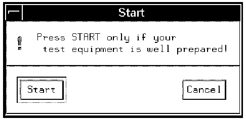

START_DIALOG
This is an optional expression you can include in your application model file, which allows you to include a checkbox just before you launch the test program.
The application model file wafer_auto has START_DIALOG as its first entry. Just before you launch the test, the following check box appears (the actual text for this check box is generated by the system).
